Boundary Logic with Credit Data: Loan-Default Prediction
Boundary_Logic_loan_default_workflow.RmdOverview
boundarylogic explains a binary classifier with a biplot. It projects the training data onto a two-dimensional plane, scores a fine grid of points on that plane with the model, and draws the model’s decision boundary there. Because every point on the plane maps back to the original features, the package can then answer two questions:
- Globally: how far is each observation from the decision boundary, and along which variables? This ranks the variables.
- Locally: what is the smallest change to one observation that would change the model’s decision (a counterfactual), and which of the changes matter?
This vignette applies the whole workflow to a credit-risk model: an XGBoost classifier that predicts loan default. For each function it shows the call, the arguments that matter and how to read the output. It ends by comparing the explanations with SHAP for the same models.
| Phase | Question | Main functions |
|---|---|---|
| 1. Global biplot | What does the model’s decision boundary look like? |
bl_prepare_data(), bl_wrap_model(),
bl_build_result()
|
| 2. Global interpretation | How far is each applicant from the boundary, and which variables matter? |
bl_find_boundary(), plot() of its result,
bl_surrogate()
|
| 3. Local interpretation | What would have to change for one applicant? |
bl_select_target(), set_filters(),
bl_find_local_cf(), bl_shapley(),
bl_find_sparse_cf()
|
How to read the steps. Each step gives the code,
then a Parameters table with the arguments this
vignette sets and the defaults that change the result
(?function lists the rest), and then says how to read the
output.
About this vignette: it is precomputed on the full data set. The output shown was produced with boundarylogic 0.2.0 on 6 November 2026.
Setup
library(boundarylogic)The model is fitted with xgboost, which is installed
with boundarylogic. The final section also uses
fastshap and shapviz (optional;
install them with
install.packages(c("fastshap", "shapviz"))).
Phase 1: the global biplot
Step 1: load and encode the data
The data set ships with the package (?loan_data): 45,000
personal loan applications with a binary outcome,
loan_status (1 = default, 0 = no default). A biplot draws
every feature as a linear axis, so every feature must be numeric. The
binary categories are coded 0/1. The three categories with more than two
levels (loan_intent, person_education and
person_home_ownership) are dropped in this example to keep
the biplot readable.
loan_raw <- read.csv(
system.file("extdata", "loan_data.csv", package = "boundarylogic")
)
loan_encoded <- loan_raw
gender_map <- c(female = 0, male = 1)
education_map <- c("High School" = 0, "Associate" = 1,
"Bachelor" = 2, "Master" = 3, "Doctorate" = 4)
ownership_map <- c("MORTGAGE" = 0, "OTHER" = 1, "OWN" = 2, "RENT" = 3)
intent_map <- c("DEBTCONSOLIDATION" = 0, "EDUCATION" = 1,
"HOMEIMPROVEMENT" = 2, "MEDICAL" = 3,
"PERSONAL" = 4, "VENTURE" = 5)
defaults_map <- c("No" = 0, "Yes" = 1)
loan_encoded$person_gender <- gender_map[loan_encoded$person_gender]
loan_encoded$person_education <- education_map[loan_encoded$person_education]
loan_encoded$person_home_ownership <- ownership_map[loan_encoded$person_home_ownership]
loan_encoded$loan_intent <- intent_map[loan_encoded$loan_intent]
loan_encoded$previous_loan_defaults_on_file <- defaults_map[loan_encoded$previous_loan_defaults_on_file]
# Coerce all columns to double, so the training data and the prediction grid
# share one type: read.csv() reads whole-number columns as integer, but the
# grid is built as double.
loan_encoded[] <- lapply(loan_encoded, as.numeric)
str(loan_encoded)
#> 'data.frame': 45000 obs. of 14 variables:
#> $ person_age : num 22 21 25 23 24 21 26 24 24 21 ...
#> $ person_gender : num 0 0 0 0 1 0 0 0 0 0 ...
#> $ person_education : num 3 0 0 2 3 0 2 0 1 0 ...
#> $ person_income : num 71948 12282 12438 79753 66135 ...
#> $ person_emp_exp : num 0 0 3 0 1 0 1 5 3 0 ...
#> $ person_home_ownership : num 3 2 0 3 3 2 3 3 3 2 ...
#> $ loan_amnt : num 35000 1000 5500 35000 35000 2500 35000 35000 35000 1600 ...
#> $ loan_intent : num 4 1 3 3 3 5 1 3 4 5 ...
#> $ loan_int_rate : num 16 11.1 12.9 15.2 14.3 ...
#> $ loan_percent_income : num 0.49 0.08 0.44 0.44 0.53 0.19 0.37 0.37 0.35 0.13 ...
#> $ cb_person_cred_hist_length : num 3 2 3 2 4 2 3 4 2 3 ...
#> $ credit_score : num 561 504 635 675 586 532 701 585 544 640 ...
#> $ previous_loan_defaults_on_file: num 0 1 0 0 0 0 0 0 0 0 ...
#> $ loan_status : num 1 0 1 1 1 1 1 1 1 1 ...
vars_to_remove <- c("loan_intent", "person_education", "person_home_ownership")
loan_encoded <- loan_encoded[, setdiff(names(loan_encoded), vars_to_remove), drop = FALSE]The columns kept:
| Column | Meaning | Units or coding |
|---|---|---|
person_age |
Age of the applicant | years |
person_gender |
Gender | 0 = female, 1 = male |
person_income |
Annual income | USD |
person_emp_exp |
Employment experience | years |
loan_amnt |
Loan amount applied for | USD |
loan_int_rate |
Interest rate of the loan | percent |
loan_percent_income |
Loan amount as a fraction of annual income | fraction |
cb_person_cred_hist_length |
Length of credit history | years |
credit_score |
Credit score | points |
previous_loan_defaults_on_file |
A prior default is on record | 0 = no, 1 = yes |
loan_status |
Outcome | 1 = default, 0 = no default |
Step 2: an exploratory biplot, before any model
A biplot of the data alone shows how the two outcomes separate and in
which directions the variables point. bl_prepare_data()
prepares the data; bl_build_result() without a model
returns a model-free result that plot() draws coloured by
the true class.
bl_dat_exp <- bl_prepare_data(
data = loan_encoded,
class_col = "loan_status",
train_fraction = 1,
seed = 121L,
hull_fraction = 1
)
#> Hull fraction: 1.00 | Retained: 45000 (100.0%) | Removed: 0 (0.0%)
bl_proj <- bl_build_result(
bl_data = bl_dat_exp,
method = "PCA",
title = "Loan default -- exploratory PCA biplot (all data)"
)
#> Note: 'bl_model' is NULL. Returning a model-free bl_result. plot_biplotEZ() will show the biplot coloured by true class only. No prediction grid or decision boundary will be available.
#> No test data found (train_fraction = 1?). bl_result$test_data set to train_data for downstream compatibility.
plot(
bl_proj,
label_dir = "Paral",
label_offset_var = c("person_age", "person_gender", "person_income",
"person_emp_exp", "loan_amnt", "loan_int_rate",
"loan_percent_income", "cb_person_cred_hist_length",
"credit_score", "previous_loan_defaults_on_file"),
label_offset_dist = c(0, 0, 0.5, 1, 0.5, 1, 0, 1.5, 0, 0)
)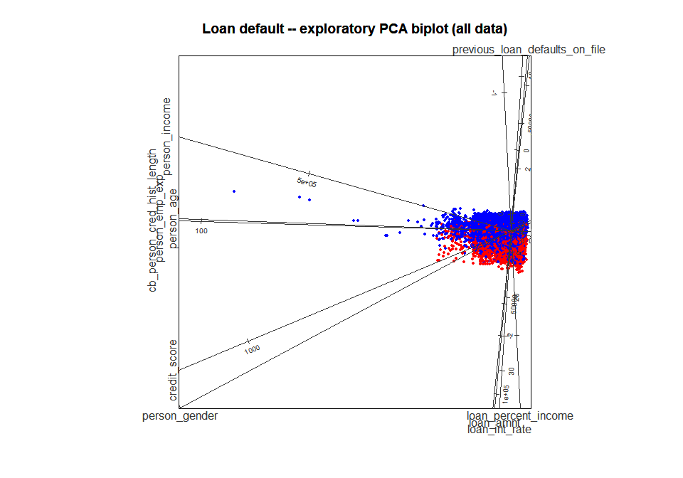
plot of chunk step2-explore
#>
#> --- Class summary (no model) ---
#> Points plotted : 45000
#> Class 1 : 10000 (22.2 %)
#> Class 0 : 35000 (77.8 %)
#> --------------------------------Parameters: bl_prepare_data()
| Parameter | Default | This call | Effect |
|---|---|---|---|
class_col |
(required) | "loan_status" |
The outcome column; it is renamed class
|
target_class |
NULL |
not set | The class value coded 1; NULL needs a 0/1 column, as
here |
feature_cols |
NULL |
not set | The features; NULL uses every other column |
train_fraction |
0.8 |
1 |
Share of rows in the training split; 1 uses every row
(no test split) |
seed |
121L |
121L |
Seed for the train/test split |
hull_fraction |
1 |
1 |
Removes the training rows outside the convex hull holding this
fraction of them; 1 removes none |
Parameters: bl_build_result()
| Parameter | Default | This call | Effect |
|---|---|---|---|
bl_model |
NULL |
not set | Without a model the result holds only the projection: no grid or boundary |
method |
"PCA" |
"PCA" |
The biplot: "PCA" (principal components) or
"CVA" (canonical variates) |
standardise |
TRUE |
default | Standardises the features before PCA (ignored for CVA) |
Parameters: plot() of a biplot
(?plot_biplotEZ)
| Parameter | Default | This call | Effect |
|---|---|---|---|
label_dir |
"Paral" |
"Paral" |
Direction of the axis labels: "Paral",
"Hor" or "Orthog"
|
label_offset_var, label_offset_dist
|
0L, 1.5
|
all ten features | Moves the named axis labels outwards by the paired distance, to stop them overlapping |
Reading the biplot. Each point is an application, red for default and blue for no default. Each straight line is the axis of one feature, calibrated in that feature’s units: the value of a point on a feature is read by dropping a perpendicular from the point onto that axis. Axes that point the same way are positively correlated. A few extreme applications lie far from the others and squeeze the main cloud into a corner; Step 4 removes such extreme rows from the training data.
Step 3: domain filter
The model is built for applicants with no prior default on
file. After the filter,
previous_loan_defaults_on_file is constant, so it is left
out of the features.
loan_filtered <- loan_encoded[loan_encoded$previous_loan_defaults_on_file == 0, ]
feature_cols <- setdiff(
names(loan_filtered),
c("loan_status", "previous_loan_defaults_on_file")
)
cat("Retained rows:", nrow(loan_filtered), "\n")
#> Retained rows: 22142
cat("Features:", paste(feature_cols, collapse = ", "), "\n")
#> Features: person_age, person_gender, person_income, person_emp_exp, loan_amnt, loan_int_rate, loan_percent_income, cb_person_cred_hist_length, credit_scoreSteps 4-6: split the data, fit the model, build the biplot
Step 4 splits the 22,142 applications 80/20 into
training and test rows and removes the outermost 10% of the training
rows (hull_fraction = 0.9): the rows outside the convex
hull that holds 90% of them, on a two-dimensional PCA view of the
standardised features. Extreme rows would otherwise stretch the biplot
and its prediction grid. The test rows are never filtered.
bl_dat <- bl_prepare_data(
data = loan_filtered,
class_col = "loan_status",
feature_cols = feature_cols,
train_fraction = 0.8,
seed = 121L,
hull_fraction = 0.9
)
#> Hull fraction: 0.90 | Retained: 15970 (90.2%) | Removed: 1743 (9.8%)
print(bl_dat)
#> <bl_filter_result>
#> Hull fraction : 0.90
#> Retained : 15970 (90.2%)
#> Removed : 1743 (9.8%)If your data is already split, for example by a cross-validation
framework, pass the two splits to bl_wrap_data() instead.
It does not filter; bl_filter_outliers() can be applied to
its result.
Step 5 fits the model and wraps it. boundarylogic
works with a model fitted anywhere: bl_wrap_model() records
the model, its features and a way to score new data. Here the XGBoost
model is wrapped as model_type = "custom" with a
predict_fn, a function of the model and a data frame that
returns one probability of class 1 per row. Any model can be wrapped
this way.
xgb_data <- xgboost::xgb.DMatrix(
data = as.matrix(bl_dat$train_data[, bl_dat$var_names]),
label = bl_dat$train_data$class
)
xgb_fit <- xgboost::xgb.train(
params = list(objective = "binary:logistic",
eval_metric = "logloss",
max_depth = 3,
learning_rate = 0.1),
data = xgb_data,
nrounds = 200,
verbose = 0
)
bl_mod <- bl_wrap_model(
model = xgb_fit,
model_type = "custom",
var_names = bl_dat$var_names,
predict_fn = function(m, new_data) {
mat <- xgboost::xgb.DMatrix(as.matrix(new_data))
as.numeric(predict(m, newdata = mat))
},
train_data = bl_dat$train_data
)
print(bl_mod)
#> <bl_model>
#> Model type : custom
#> Cutoff : 0.5
#> Train Accuracy: 0.8280 | Train Gini: 0.8093
#>
#> --- Model summary ---
#> Length Class Mode
#> model 200 xgb.Booster list
#> predict_fn 1 -none- function
#> ---------------------Parameters: bl_wrap_model()
| Parameter | Default | This call | Effect |
|---|---|---|---|
model_type |
(required) | "custom" |
"custom" scores with predict_fn; the
built-in types ("GLM", "GAM",
"GBM", "LDA", "SVM",
"NNET", "RForest", "XGB") use
their own prediction call (Step 5b shows "XGB") |
var_names |
(required) | the nine features | The features the model was trained on, in order |
predict_fn |
NULL |
the function above |
function(model, new_data) returning probabilities of
class 1; required for "custom"
|
train_data |
NULL |
the training split | Used only to report the training accuracy and Gini |
cutoff |
0.5 |
default | The decision threshold. Keep 0.5: the method assumes it |
For a quick baseline, bl_fit_model() fits a GLM, SVM,
neural network or random forest directly.
Step 6 builds the biplot of the model.
bl_build_result() projects the training data, lays an
m × m grid over the plane, maps every grid
point back to the features, scores it with the model and draws the
decision boundary where the predicted probability crosses the
cutoff.
bl_results <- bl_build_result(
bl_data = bl_dat,
bl_model = bl_mod,
method = "CVA",
# The trailing "\n" lifts the title clear of the stacked axis labels below.
title = "Loan default (no prior default) -- XGB, CVA biplot\n",
b_margin = 0.001
)
print(bl_results)
#> <bl_result>
#> Model type : custom
#> Method : CVA
#> Features : 9 (person_age, person_gender, person_income, person_emp_exp, loan_amnt, loan_int_rate, loan_percent_income, cb_person_cred_hist_length, credit_score)
#> Train rows : 15970 | Test rows: 4429
#> Cutoff : 0.5
#> Accuracy : 0.8280 | Gini: 0.8093
#> Grid size : 200 x 200
#> Grid hull : outlie = 1.00
#> Created : 2026-11-06 23:16:51Parameters: bl_build_result(), with a
model
| Parameter | Default | This call | Effect |
|---|---|---|---|
method |
"PCA" |
"CVA" |
CVA separates the model’s four outcome groups (true and false positives and negatives) as well as two dimensions allow, so the boundary shows clearly |
b_margin |
0.001 |
0.001 |
The boundary is drawn from the contours at cutoff ±
b_margin (0.499 and 0.501) |
m |
200L |
default | Grid resolution: 200 × 200 scored points |
cva_classes |
NULL |
default | With a model, CVA uses the four outcome groups (TP, TN, FP, FN) |
plot(
bl_results,
label_dir = "Hor",
label_offset_var = c("loan_amnt", "credit_score"), # lift two labels
label_offset_dist = c(1, 1) # off their neighbours
)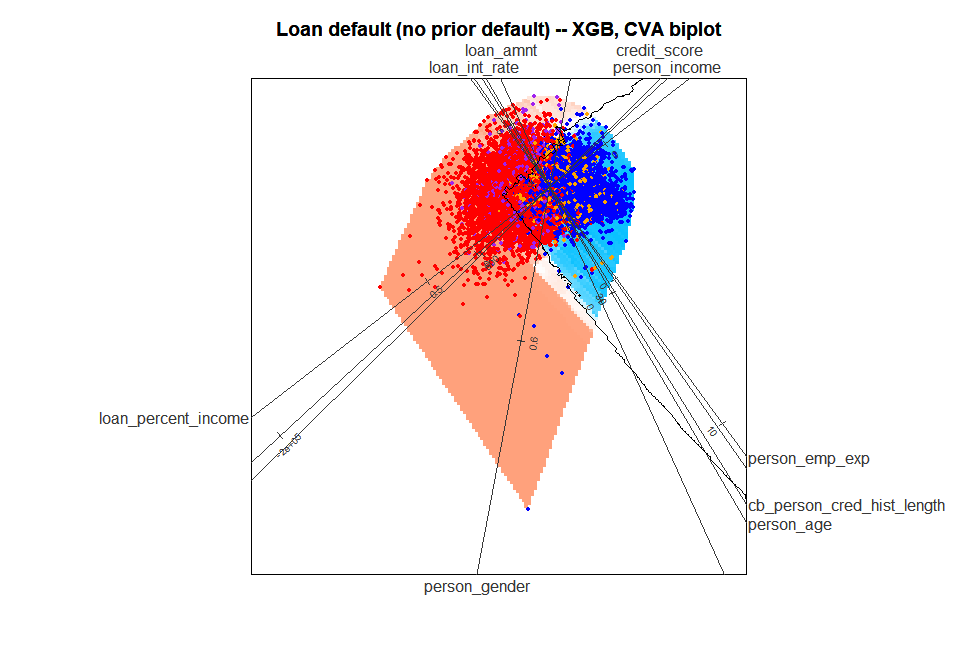
plot of chunk step6-biplot
#>
#> --- Prediction summary ---
#> Points plotted : 15970
#> Predicted 1 : 6552 (41.0 %)
#> Predicted 0 : 9418 (59.0 %)
#> Accuracy : 13223 / 15970 (82.8 %)
#> TP / TN / FP / FN : 5472 / 7751 / 1080 / 1667
#> --------------------------Reading the model biplot. The background colour is the model’s predicted probability over the plane, and the black line is the decision boundary. The colour is drawn only inside the convex hull of the training data, the region the data supports. The training points are coloured by outcome group: true positive red, true negative blue, false positive purple, false negative orange.
New rows are drawn on the biplot with
bl_project_points(), here the test split.
filter_to_polygon = TRUE drops the rows that project
outside the training hull.
test_pts <- bl_project_points(bl_results$test_data, bl_results,
filter_to_polygon = TRUE)
plot(bl_results, points = test_pts,
label_offset_var = c("loan_amnt", "credit_score",
"cb_person_cred_hist_length", "person_age"),
label_offset_dist = c(1, 1, 1, 2))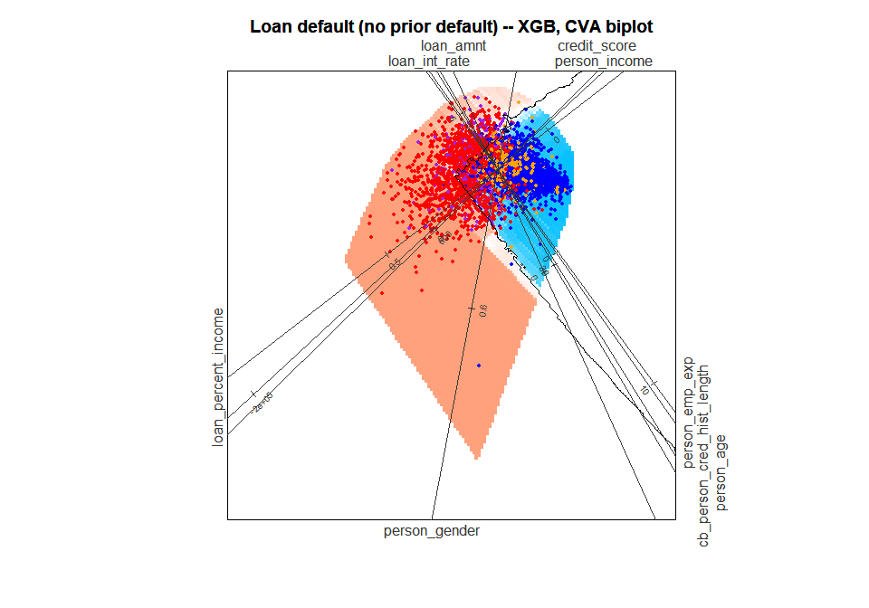
plot of chunk step6-test
#>
#> --- Prediction summary ---
#> Points plotted : 4420
#> Predicted 1 : 1839 (41.6 %)
#> Predicted 0 : 2581 (58.4 %)
#> Accuracy : 3632 / 4420 (82.2 %)
#> TP / TN / FP / FN : 1494 / 2138 / 345 / 443
#> --------------------------Parameters: bl_project_points()
| Parameter | Default | This call | Effect |
|---|---|---|---|
filter_to_polygon |
FALSE |
TRUE |
Drops rows that project outside the training hull |
filter_to_train_ranges |
FALSE |
default | Drops rows with a feature outside its training range |
Phase 2: global interpretation
Step 7: the nearest boundary point of every test applicant
bl_find_boundary() finds, for each test applicant, the
nearest point on the decision boundary in the biplot and maps it back to
the features. This is the applicant’s global counterfactual.
The search uses only the boundary inside the training hull, and a closed
boundary line only if it encloses training rows, so an applicant’s
result does not depend on which other applicants are searched with it.
Boundary points with a feature outside its training range are kept and
counted in a message. The distances it reports (dist_x,
dist_mahalanobis) are for information: the variable
importance below is measured along the biplot plane.
bl_bnd <- bl_find_boundary(bl_results)
#> bl_find_boundary(): 27 identified counterfactual(s) are outside the training feature ranges, but are retained.
print(bl_bnd)
#> <bl_boundary>
#> Observations : 4429
#> Boundaries used: 2
#> Dist Z (mean) : 0.0105
#> Dist X (mean) : 2.9146
#> Dist M (mean) : 3.0104 (sqrt of dist_mahalanobis)
#> B_pred range : [0.2310, 0.8340]Parameters: bl_find_boundary()
| Parameter | Default | This call | Effect |
|---|---|---|---|
data |
bl_result$test_data |
default | The rows to search for; bl_results$train_data searches
the training rows |
tdp |
NULL |
default | Row indices of data to process; NULL
processes all |
plot() of the result splits each applicant’s distance to
its boundary point into one signed distance per variable. It draws them,
prints a summary and returns the per-variable totals invisibly.
bnd_imp <- plot(bl_bnd)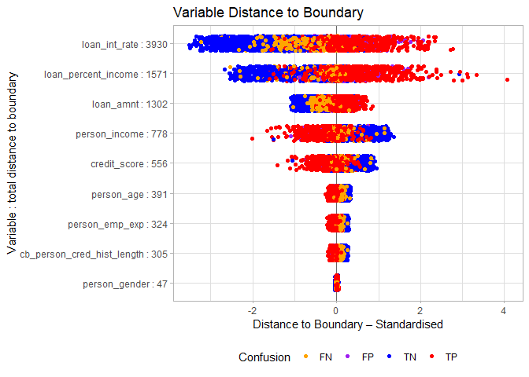
plot of chunk step7-jitter
#>
#> Distance metric: mahalanobis
#> Robustness (total distance): 9203.29
#>
#> Per-variable totals (descending):
#> loan_int_rate loan_percent_income
#> 3929.71 1570.78
#> loan_amnt person_income
#> 1301.68 777.71
#> credit_score person_age
#> 556.06 390.66
#> person_emp_exp cb_person_cred_hist_length
#> 323.83 305.42
#> person_gender
#> 47.43
#>
#> Mahalanobis check (squared distances, summed across obs):
#> plotted (per feature) = 9675.25 | full d_M^2 = 11754.70 | difference = 2079.45 (+17.7% of full)
plot(bl_bnd, type = "boxplot")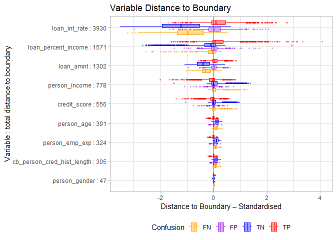
plot of chunk step7-boxplot
#>
#> Distance metric: mahalanobis
#> Robustness (total distance): 9203.29
#>
#> Per-variable totals (descending):
#> loan_int_rate loan_percent_income
#> 3929.71 1570.78
#> loan_amnt person_income
#> 1301.68 777.71
#> credit_score person_age
#> 556.06 390.66
#> person_emp_exp cb_person_cred_hist_length
#> 323.83 305.42
#> person_gender
#> 47.43
#>
#> Mahalanobis check (squared distances, summed across obs):
#> plotted (per feature) = 9675.25 | full d_M^2 = 11754.70 | difference = 2079.45 (+17.7% of full)Parameters: plot() of a boundary result
(?plot.bl_boundary)
| Parameter | Default | This call | Effect |
|---|---|---|---|
type |
"jitter" |
"jitter", then "boxplot"
|
One point per applicant and variable, or box plots per outcome group |
distance |
"auto" |
default | How each variable’s distance is standardised: under CVA by its
within-class standard deviation ("mahalanobis"), under PCA
by its total standard deviation ("euclidean") |
Reading the plot. Each row is a variable. The label gives its total absolute standardised distance over all test applicants, and the rows are sorted from the smallest total (bottom) to the largest (top). A large total means the variable carries much of the distance to the boundary: it matters more for the decision. The sign shows on which side of the boundary an applicant lies along that variable. The console summary repeats the totals and adds a Mahalanobis check: the per-variable distances ignore the correlations between the variables, so the check compares their summed squares with the full squared Mahalanobis distance. Here they fall short of it by 17.7%.
To see one applicant’s global counterfactual, click it on the biplot
with bl_pick_point() in an interactive session (press Esc
to stop). bl_bnd holds one row per test row, so pick from
the test data:
bl_pick_point(bl_results, data = bl_results$test_data, bl_boundary = bl_bnd)Prune the least important variables
The per-variable totals rank the variables. Sorted from the weakest:
var_imp <- sort(bnd_imp$sum_of_distance) # ascending: weakest first
print(round(var_imp, 2))
#> person_gender cb_person_cred_hist_length
#> 47.43 305.42
#> person_emp_exp person_age
#> 323.83 390.66
#> credit_score person_income
#> 556.06 777.71
#> loan_amnt loan_percent_income
#> 1301.68 1570.78
#> loan_int_rate
#> 3929.71
vars_to_drop <- c("person_gender", "person_emp_exp",
"cb_person_cred_hist_length", "person_income", "person_age")
feature_cols_v2 <- setdiff(bl_dat$var_names, vars_to_drop)
cat("Retained features:", paste(feature_cols_v2, collapse = ", "), "\n")
#> Retained features: loan_amnt, loan_int_rate, loan_percent_income, credit_scoreThe ranking guides the choice: the four weakest variables are dropped. Two judgements override it:
-
person_incomeis dropped although it outrankscredit_score(777.71 against 556.06).loan_percent_incomeisloan_amnt / person_income, so income adds little once both loan variables are kept. -
credit_scoreis kept because an applicant can act on it (Step 10).
The full model’s training accuracy is 0.8280 (Gini 0.8093).
Refit on the reduced feature set (Steps 4b-6b)
The pipeline is rebuilt on the four kept variables. This time the features are standardised before the model is fitted, as many models need (XGBoost does not, but the example shows the pattern):
- The split and the hull filter run on the raw data, with the same seed, so the training and test rows are as before (the hull filter standardises internally, so it gives the same result on raw or standardised data). Only the rows the hull removes differ, because the hull is now computed on four features.
- The means and standard deviations come from the training rows only and are applied to both splits, so no information leaks from the test rows.
-
bl_set_scaling()records them, so every plot and print shows values in the original units (USD, percent, points). It changes only what is displayed: the model, the projection and the grid all work in z-scores.
bl_dat_v2 <- bl_prepare_data(
data = loan_filtered,
class_col = "loan_status",
feature_cols = feature_cols_v2,
train_fraction = 0.8,
seed = 121L,
hull_fraction = 0.9
)
#> Hull fraction: 0.90 | Retained: 15996 (90.3%) | Removed: 1717 (9.7%)
# Standardisation fitted on the training rows only
train_scl <- scale(bl_dat_v2$train_data[, feature_cols_v2])
scl_center <- attr(train_scl, "scaled:center")
scl_scale <- attr(train_scl, "scaled:scale")
# Apply the training transform to both splits
bl_dat_v2$train_data[, feature_cols_v2] <- train_scl
bl_dat_v2$test_data[, feature_cols_v2] <-
scale(bl_dat_v2$test_data[, feature_cols_v2],
center = scl_center, scale = scl_scale)
# Record the transform, for raw-unit axes and printouts
bl_dat_v2 <- bl_set_scaling(bl_dat_v2,
center = scl_center,
scale = scl_scale,
method = "z-score")Parameters: bl_set_scaling()
| Parameter | Default | This call | Effect |
|---|---|---|---|
center, scale
|
(required) | the training means and SDs | The transform standardised = (raw - center) / scale,
one value per feature |
method |
"z-score" |
"z-score" |
A label, for reference only |
The reduced model uses the built-in "XGB" type: the
model is passed as
list(model = <booster>, features = <feature names>)
and needs no predict_fn.
xgb_data_v2 <- xgboost::xgb.DMatrix(
data = as.matrix(bl_dat_v2$train_data[, bl_dat_v2$var_names]),
label = bl_dat_v2$train_data$class
)
xgb_fit_v2 <- xgboost::xgb.train(
params = list(objective = "binary:logistic",
eval_metric = "logloss",
max_depth = 3,
learning_rate = 0.1),
data = xgb_data_v2,
nrounds = 200,
verbose = 0
)
bl_mod_v2 <- bl_wrap_model(
model = list(model = xgb_fit_v2, features = bl_dat_v2$var_names),
model_type = "XGB",
var_names = bl_dat_v2$var_names,
train_data = bl_dat_v2$train_data
)
print(bl_mod_v2)
#> <bl_model>
#> Model type : XGB
#> Cutoff : 0.5
#> Train Accuracy: 0.8161 | Train Gini: 0.7747
#>
#> --- Model summary ---
#> Length Class Mode
#> model 200 xgb.Booster list
#> features 4 -none- character
#> ---------------------The reduced model’s training accuracy is 0.8161 (Gini 0.7747), against 0.8280 for the nine-feature model.
bl_results_v2 <- bl_build_result(
bl_data = bl_dat_v2,
bl_model = bl_mod_v2,
method = "CVA",
title = "Loan default -- XGB, reduced features, CVA biplot",
b_margin = 0.01
)
print(bl_results_v2) # "Axis units : raw (z-score scaling stored)"
#> <bl_result>
#> Model type : XGB
#> Method : CVA
#> Features : 4 (loan_amnt, loan_int_rate, loan_percent_income, credit_score)
#> Train rows : 15996 | Test rows: 4429
#> Cutoff : 0.5
#> Accuracy : 0.8161 | Gini: 0.7747
#> Grid size : 200 x 200
#> Grid hull : outlie = 1.00
#> Axis units : raw (z-score scaling stored)
#> Created : 2026-11-06 23:17:02
plot(bl_results_v2)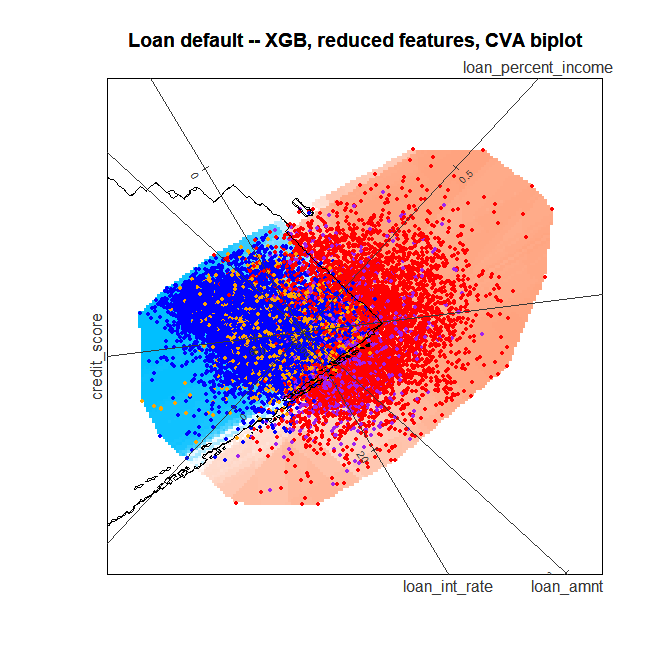
plot of chunk step6b-build
#>
#> --- Prediction summary ---
#> Points plotted : 15996
#> Predicted 1 : 6474 (40.5 %)
#> Predicted 0 : 9522 (59.5 %)
#> Accuracy : 13055 / 15996 (81.6 %)
#> TP / TN / FP / FN : 5353 / 7702 / 1121 / 1820
#> --------------------------This build sets b_margin = 0.01, so the boundary is
drawn from the contours at 0.49 and 0.51. The axes read in the original
units although the model works in z-scores.
test_pts_v2 <- bl_project_points(bl_results_v2$test_data, bl_results_v2)
plot(bl_results_v2, points = test_pts_v2)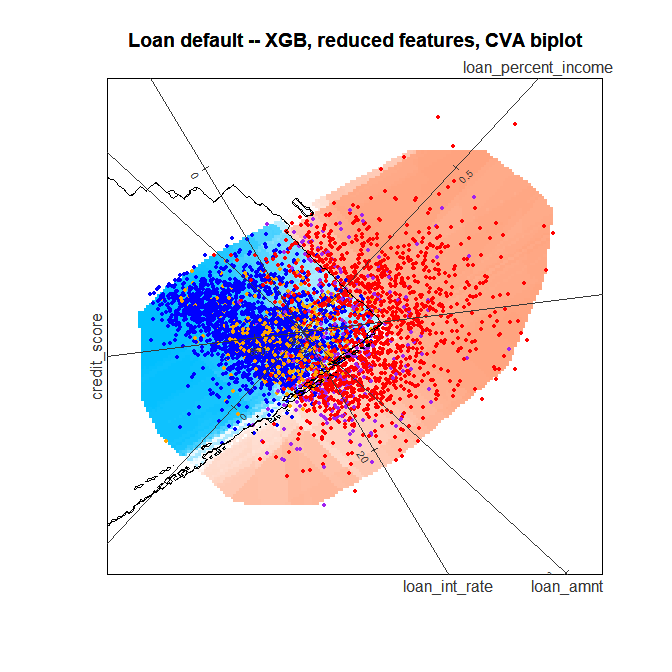
plot of chunk step6b-test
#>
#> --- Prediction summary ---
#> Points plotted : 4429
#> Predicted 1 : 1800 (40.6 %)
#> Predicted 0 : 2629 (59.4 %)
#> Accuracy : 3595 / 4429 (81.2 %)
#> TP / TN / FP / FN : 1454 / 2141 / 346 / 488
#> --------------------------Phase 2 on the reduced model
Step 7b: distance to the boundary
bl_bnd_v2 <- bl_find_boundary(bl_results_v2)
#> bl_find_boundary(): 97 identified counterfactual(s) are outside the training feature ranges, but are retained.
print(bl_bnd_v2)
#> <bl_boundary>
#> Observations : 4429
#> Boundaries used: 18
#> Dist Z (mean) : 0.0095
#> Dist X (mean) : 1.8120
#> Dist M (mean) : 1.9545 (sqrt of dist_mahalanobis)
#> B_pred range : [0.2570, 0.8490]
plot(bl_bnd_v2)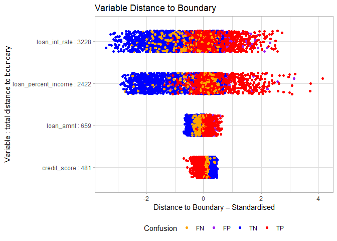
plot of chunk step7b-jitter
#>
#> Distance metric: mahalanobis
#> Robustness (total distance): 6790.20
#>
#> Per-variable totals (descending):
#> loan_int_rate loan_percent_income loan_amnt credit_score
#> 3227.72 2422.42 658.91 481.15
#>
#> Mahalanobis check (squared distances, summed across obs):
#> plotted (per feature) = 7968.57 | full d_M^2 = 9486.73 | difference = 1518.16 (+16.0% of full)
plot(bl_bnd_v2, type = "boxplot")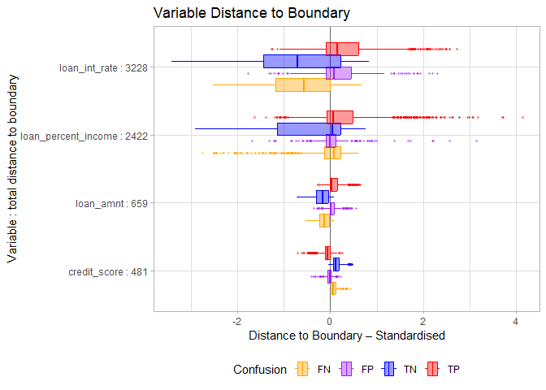
plot of chunk step7b-boxplot
#>
#> Distance metric: mahalanobis
#> Robustness (total distance): 6790.20
#>
#> Per-variable totals (descending):
#> loan_int_rate loan_percent_income loan_amnt credit_score
#> 3227.72 2422.42 658.91 481.15
#>
#> Mahalanobis check (squared distances, summed across obs):
#> plotted (per feature) = 7968.57 | full d_M^2 = 9486.73 | difference = 1518.16 (+16.0% of full)Steps 8 and 8b: how faithful is the biplot?
bl_surrogate()
The biplot shows the model in two dimensions, so it can only
approximate it. bl_surrogate() measures how well. It
classifies each training row by its position in the biplot alone, by the
side of the nearest boundary contour, without calling the model, and
reports how often that agrees with the model’s own class. A higher
agreement means the biplot represents the model more faithfully.
bl_surr <- bl_surrogate(bl_results)
print(bl_surr)
#> <bl_surrogate>
#> Observations : 15970
#> Surrogate regions : 26
#> Accuracy vs model : 0.8337 (in-hull: 15970 / 15970 = 100%)
#> Accuracy vs labels : 0.7296
plot(bl_surr,
label_offset_var = c("loan_amnt", "credit_score",
"cb_person_cred_hist_length", "person_age"),
label_offset_dist = c(1, 1, 1, 2))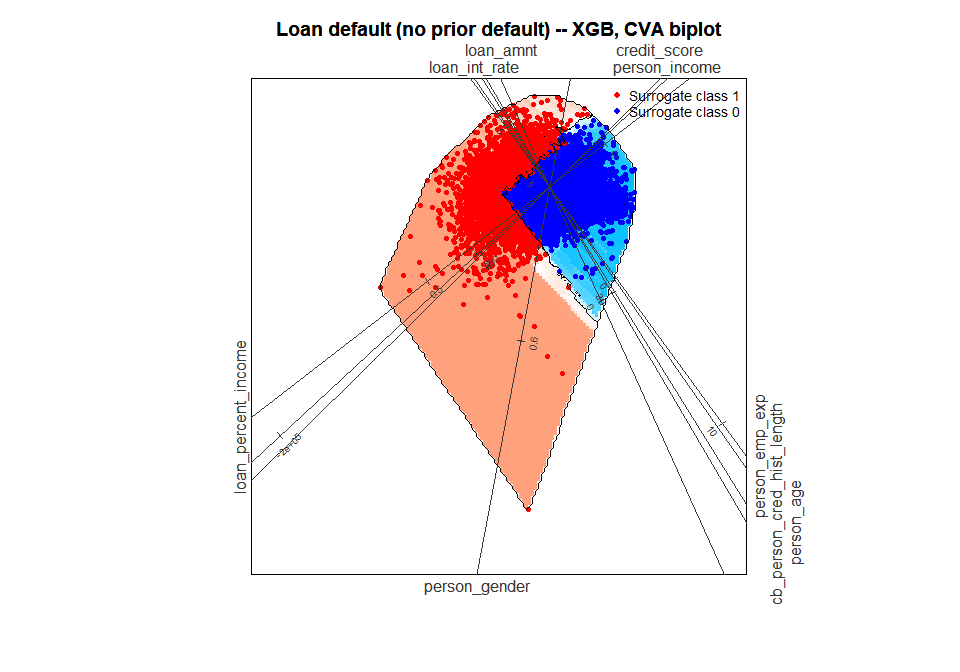
plot of chunk step8-surrogate
#> Surrogate accuracy vs model : 0.8337
#> Surrogate accuracy vs labels: 0.7296
bl_surr_v2 <- bl_surrogate(bl_results_v2)
print(bl_surr_v2)
#> <bl_surrogate>
#> Observations : 15996
#> Surrogate regions : 45
#> Accuracy vs model : 0.8845 (in-hull: 15996 / 15996 = 100%)
#> Accuracy vs labels : 0.7558
plot(bl_surr_v2,
label_dir = "Paral",
label_offset_var = c("loan_amnt", "loan_int_rate",
"loan_percent_income", "credit_score"),
label_offset_dist = c(0, 0.5, 0, 0),
ticks_v = 5)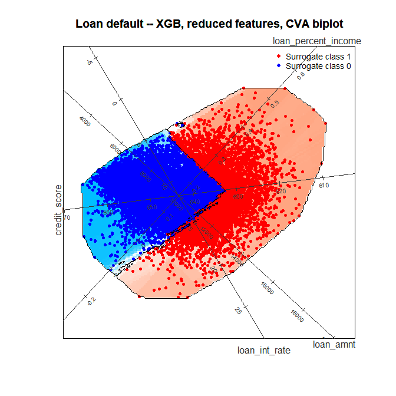
plot of chunk step8b-surrogate
#> Surrogate accuracy vs model : 0.8845
#> Surrogate accuracy vs labels: 0.7558The biplot agrees with the model on 83.4% of the training rows for the nine-feature model and on 88.5% for the reduced model: with fewer variables, two dimensions hold more of the model.
Parameters: bl_surrogate() and its
plot
| Parameter | Default | This call | Effect |
|---|---|---|---|
data |
bl_result$train_data |
default | The rows to classify |
ticks_v |
1L |
5L (8b) |
Number of tick marks on every axis; ticks_var and
ticks_n set it per axis |
Phase 3: local interpretation of one applicant
All of Phase 3 uses the reduced model,
bl_results_v2.
Step 9: choose the applicant
bl_predict() scores the test rows and labels each with
its outcome group.
pred_summary <- bl_predict(bl_results_v2)
head(pred_summary)
#> row pred_prob pred_class true_class confusion loan_amnt loan_int_rate
#> 1 1 0.810 1 1 TP 4.199532 -0.9009358
#> 2 2 0.521 1 0 FP 4.199532 -1.2315082
#> 3 3 0.827 1 1 TP 3.866329 0.3486275
#> 4 4 0.816 1 1 TP 3.541457 0.8411803
#> 5 5 0.931 1 1 TP 3.366526 1.7403370
#> 6 6 0.415 0 1 FN 3.366526 -1.6546407
#> loan_percent_income credit_score
#> 1 2.155892 -2.4018549
#> 2 1.042371 -1.4592582
#> 3 2.712653 0.2567511
#> 4 1.265075 0.9093180
#> 5 1.933188 0.1359054
#> 6 1.376427 0.2567511
tdp <- 13
pred_summary[tdp, ]
#> row pred_prob pred_class true_class confusion loan_amnt loan_int_rate
#> 13 13 0.111 0 0 TN 0.3677028 0.3519332
#> loan_percent_income credit_score
#> 13 -1.184672 -0.2266318Test row 13 is a true negative: the applicant did not default, and the model predicts a probability of default of 0.111. The question is what would have to change for the model to predict default? It shows how far this applicant is from being declined. False negatives (defaulters the model clears) are another natural choice of target.
target_value <- bl_results_v2$test_data[tdp, ]
plot(
bl_results_v2,
plot_points = FALSE, # hide the training points
target_point = target_value,
target_label = tdp,
label_dir = "Paral",
label_offset_var = c("loan_amnt", "loan_int_rate",
"loan_percent_income", "credit_score"),
label_offset_dist = c(0, 0.5, 0, 0),
ticks_v = 3
)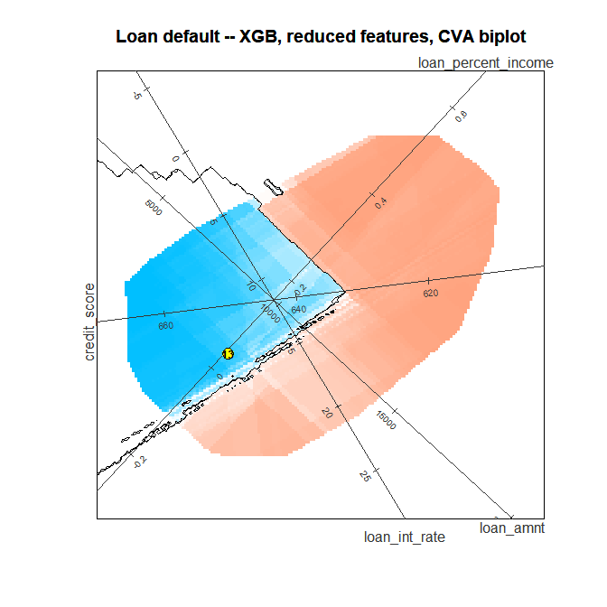
plot of chunk step9-plot
#>
#> --- Prediction summary ---
#> Points plotted : 15996
#> Predicted 1 : 6474 (40.5 %)
#> Predicted 0 : 9522 (59.5 %)
#> Accuracy : 13055 / 15996 (81.6 %)
#> TP / TN / FP / FN : 5353 / 7702 / 1121 / 1820
#> --------------------------Parameters: plot() with a target
| Parameter | Default | This call | Effect |
|---|---|---|---|
plot_points |
TRUE |
FALSE |
Hides the training (or points) rows |
target_point, target_label
|
NULL |
row 13 | Marks one row and labels it |
ticks_v |
1L |
3L |
Tick marks per axis |
In an interactive session, clicking the target draws the arrow to its global counterfactual from Step 7b:
bl_pick_point(bl_results_v2, data = bl_results_v2$test_data,
bl_boundary = bl_bnd_v2)Step 10: the target and its constraints
bl_select_target() takes the applicant: a row index into
the test data (or into data =), or a one-row data frame
(Step 16). It records the features, the prediction and the true
class.
tgt <- bl_select_target(bl_results_v2, target = tdp)
print(tgt)
#> -- bl_target --
#> Row ID : 13
#> Predicted prob : 0.1110
#> Predicted class: 0
#> Feature values (raw units) :
#> loan_amnt loan_int_rate loan_percent_income credit_score
#> 12000.00 12.69 0.05 634.00A counterfactual is useful only if the changes it asks for are
possible. set_filters() holds the three rules a
counterfactual must meet:
- Actionability: per-variable constraints, named after the variables.
-
Plausibility (
hull = TRUE): the counterfactual lies inside the convex hull of the training data on the plane the search uses, and a closed boundary line counts only if it encloses training data. -
Feasibility (
train_ranges = TRUE): every feature stays within its training range.
flt <- set_filters(
tgt,
loan_amnt = "fixed", # the amount applied for stays
loan_int_rate = "increase", # may only rise
credit_score = c("increase", "integer"), # may only rise, in whole points
hull = TRUE,
train_ranges = TRUE
)
print(flt)
#> -- bl_filters --
#> loan_amnt : fixed
#> loan_int_rate : increase
#> credit_score : increase, integer
#> Plausibility (hull) : on
#> Feasibility (train_ranges) : onThe constraints set_filters()
accepts
| Constraint | Meaning |
|---|---|
"increase" |
The counterfactual value is at least the observed value |
"decrease" |
The counterfactual value is at most the observed value |
"fixed" |
The feature keeps its observed value. The search allows it to move by up to 0.5 model units (a point on the two-dimensional boundary rarely holds a feature exactly), then restores the observed value and re-checks the prediction. If the restored point no longer crosses the boundary, there is no counterfactual |
c(min, max) |
The counterfactual value lies in this range, in model
units (z-scores for bl_results_v2; convert with
bl_apply_scaling()) |
"integer" |
A whole number in the original units (a count or a score), alone or
combined: c("increase", "integer"),
list(c(min, max), "integer"). The counterfactual is rounded
after the search and re-checked |
hull = FALSE, train_ranges = FALSE
|
Drop the plausibility or the feasibility rule |
A variable that is not named can change freely. Only variables in the model can be named.
Step 11: the local counterfactual,
bl_find_local_cf()
bl_find_local_cf() searches for the nearest point across
the decision boundary that meets the constraints:
- For each pair of canonical components, it rotates the biplot so the plane passes through the target.
- It scores a grid on that plane and finds the boundary.
- It keeps the boundary points inside the hull on that plane, then those that meet the actionability constraints and the training ranges, and that the model scores on the other side of the cutoff.
- It takes the nearest of them, and over all the pairs the one nearest to the target in the original features (under CVA, by the Mahalanobis distance).
- It restores the
"fixed"features and rounds the"integer"ones, and checks that the adjusted point still crosses the boundary.
The progress messages list the distance found on each pair.
bl_local <- bl_find_local_cf(
bl_result = bl_results_v2,
set_filters = flt,
bl_target = tgt
)
#> Pair 1/6: components (1, 2) ...
#> Distance: 0.0283 Z | 3.5800 Mahalanobis (sqrt)
#> Pair 2/6: components (1, 3) ...
#> Distance: 0.0278 Z | 3.5165 Mahalanobis (sqrt)
#> Pair 3/6: components (2, 3) ...
#> Distance: 0.0283 Z | 3.5822 Mahalanobis (sqrt)
#> Pair 4/6: components (1, 4) ...
#> Distance: 0.0156 Z | 1.9674 Mahalanobis (sqrt)
#> Pair 5/6: components (2, 4) ...
#> Distance: 0.0276 Z | 3.4935 Mahalanobis (sqrt)
#> Pair 6/6: components (3, 4) ...
#> Distance: 0.0055 Z | 0.6934 Mahalanobis (sqrt)
#> Best pair: (3, 4) | Selector: Mahalanobis (sqrt) = 0.6934 | Z = 0.0055
#> Fixed feature(s) loan_amnt restored to observed value(s); the restored point still crosses the boundary (pred 0.693) and is used as the counterfactual.
#> Integer feature(s) credit_score rounded to whole values; the rounded point still crosses the boundary (pred 0.693) and is used as the counterfactual.
print(bl_local)
#> -- bl_local_result --
#> Solution found : TRUE
#> Best pair : (3, 4)
#> Selector : mahalanobis
#> Distance (Z) : 0.0055
#> Euclidean (X) : 0.5874 (total-SD scale)
#> Mahalanobis : 0.6934 (sqrt of squared d_M^2 = 0.4808)
#> Boundary pred : 0.6930
#> Fixed restored : loan_amnt
#> Integer rounded : credit_score
#>
#> Target:
#> -- bl_target --
#> Row ID : 13
#> Predicted prob : 0.1110
#> Predicted class: 0
#> Feature values (raw units) :
#> loan_amnt loan_int_rate loan_percent_income credit_score
#> 12000.00 12.69 0.0500 634.00
#>
#> Counterfactual:
#> -- bl_counterfactual --
#> Boundary prob : 0.6930
#> Predicted class: 1
#> Feature values (raw units) :
#> loan_amnt loan_int_rate loan_percent_income credit_score
#> 12000.00 14.44 0.0457 635.00
#>
#> Per-pair distances:
#> pair dist_z dist_x dist_mahalanobis
#> (1,2) 0.02830926 2.2489005 12.8162127
#> (1,3) 0.02780772 2.1554967 12.3661193
#> (2,3) 0.02832678 2.2510873 12.8320826
#> (1,4) 0.01555777 1.2202560 3.8707700
#> (2,4) 0.02762566 2.2367562 12.2047315
#> (3,4) 0.00548295 0.5873798 0.4807633
#>
#> Observed vs counterfactual (raw units):
#> observed counterfactual change constraint
#> loan_amnt 12000.00 12000.00 0.00 fixed
#> loan_int_rate 12.69 14.44 1.75 increase
#> loan_percent_income 0.0500 0.0457 -0.0043 none
#> credit_score 634.00 635.00 1.00 increase, integer
#>
#> Note: loan_amnt is "fixed", but the boundary search moved it to 12523.4436
#> (+523.4436). The search lets a "fixed" feature move by up to 0.5
#> model units (+/- 3001.1777 here), because a point on the 2D decision
#> boundary rarely holds a feature at exactly its observed value.
#> Restoring loan_amnt to its observed value still crosses the boundary
#> (prediction 0.6930), so the restored point is the selected
#> counterfactual.
#>
#> Note: credit_score is "integer", and the boundary point has 634.0454. Of
#> the 2 combinations of the whole values just below and above, 2 still
#> cross the boundary within the constraints; the nearest, 635
#> (prediction 0.6930), is the counterfactual.Parameters: bl_find_local_cf()
| Parameter | Default | This call | Effect |
|---|---|---|---|
set_filters |
NULL |
flt |
The constraints. NULL means no actionability
constraint, with the hull and the training ranges still applied |
max_pairs |
21L |
default | Component pairs searched; 21 covers every pair for up to 7 features (6 here) |
m |
200L |
default | Grid resolution on each plane |
distance |
"auto" |
default | How the pairs are compared: Mahalanobis under CVA, Euclidean under PCA |
verbose |
TRUE |
default | Prints the progress messages |
Reading the result. The counterfactual raises the interest rate from 12.69% to 14.44% and the credit score from 634 to 635, keeps the loan amount, and the model then predicts 0.693: across the cutoff. The table shows each feature’s observed and counterfactual value, the change and the constraint, in the original units. The notes explain what happened to the fixed and the integer features.
Step 12: the local biplot
plot() of the result draws the rotated plane that gave
the counterfactual: the target (filled circle), the counterfactual
(cross) and an arrow between them. As on the global biplot, the
prediction colour is drawn only inside the hull on this plane, the
region the search could use.
plot(bl_local,
label_dir = "Paral",
label_offset_var = c("loan_amnt", "loan_int_rate",
"loan_percent_income", "credit_score"),
label_offset_dist = c(0, 0, 1, 0),
ticks_var = c("loan_amnt", "loan_int_rate",
"loan_percent_income", "credit_score"),
ticks_n = c(4, 5, 5, 5))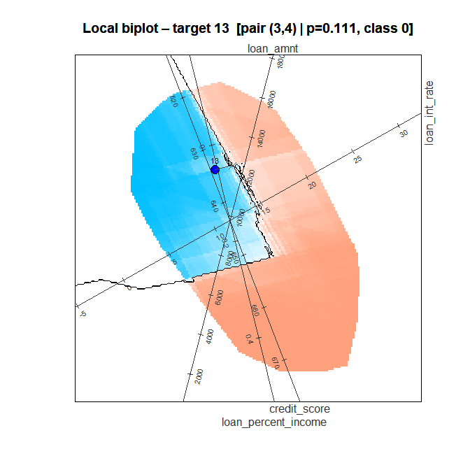
plot of chunk step12-plot
#>
#> --- Local CF summary ---
#> Target : 13
#> Pred prob : 0.1110 (class 0)
#> Best pair : (3, 4)
#> Selector : mahalanobis
#> Distance (Z) : 0.0055
#> Euclidean (X) : 0.5874
#> Mahalanobis : 0.6934 (sqrt)
#> Boundary pred : 0.6930
#> ------------------------Parameters: plot() of a local result
(?plot.bl_local_result)
| Parameter | Default | This call | Effect |
|---|---|---|---|
ticks_var, ticks_n
|
0L, 5L
|
all four, c(4, 5, 5, 5)
|
Tick marks per named axis, paired by position |
trim_to_hull |
NULL |
default | Colours the grid only inside the hull when the search used it |
plot_points |
FALSE |
default |
TRUE adds the training points |
Step 13: which changes matter? bl_shapley()
The move from the target to the counterfactual changes several
features at once. bl_shapley() splits the change in the
predicted probability among them, with Shapley values, and labels each
feature:
- Supports: its change moves the prediction towards the boundary.
- Contradicts: its change moves the prediction away from it.
- No effect: its change does not move the prediction.
bl_shapley_values <- bl_shapley(bl_local)
print(bl_shapley_values)
#> -- bl_shapley --
#> Row ID : 13
#> Observed pred : 0.1110 (class 0)
#> Full CF pred : 0.6930
#> Shapley sum : 0.5820
#>
#> Observed vs counterfactual, with Shapley values (raw units):
#> observed counterfactual change constraint shapley
#> loan_amnt 12000.00 12000.00 0.00 fixed 0.00
#> loan_int_rate 12.69 14.44 1.75 increase 0.44
#> loan_percent_income 0.0500 0.0457 -0.0043 none 0.14
#> credit_score 634.00 635.00 1.00 increase, integer 0.00
#> contribute
#> loan_amnt No effect
#> loan_int_rate Supports
#> loan_percent_income Supports
#> credit_score No effect
plot(bl_shapley_values)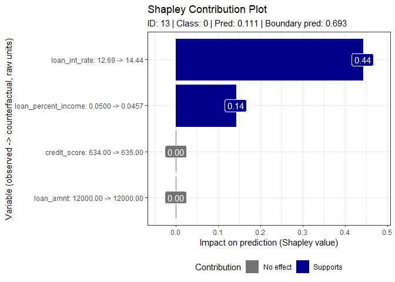
plot of chunk step13-shapley
The labels read variable: observed -> counterfactual.
The values sum to the change in the prediction, from 0.111 to 0.693.
With up to 14 features the Shapley values are exact; above that,
bl_shapley() estimates them from approx_perm
random permutations (set seed to repeat them).
Step 14: the sparse counterfactual,
bl_find_sparse_cf()
A counterfactual that changes fewer features is easier to act on.
bl_find_sparse_cf() keeps every Contradicts, No effect and
"fixed" feature at its observed value. It changes the
Supports features one at a time, largest Shapley value first, re-scores
the model after each, and stops as soon as the prediction crosses the
boundary.
bl_sparse <- bl_find_sparse_cf(bl_shapley_values)
print(bl_sparse)
#> -- bl_sparse_result --
#> Solution valid : TRUE
#> Observed pred : 0.1110 (class 0)
#> Full CF pred : 0.6930
#> Sparse CF pred : 0.5120
#>
#> Observed vs sparse counterfactual (raw units):
#> observed counterfactual sparse change constraint
#> loan_amnt 12000.00 12000.00 12000.00 0.00 fixed
#> loan_int_rate 12.69 14.44 14.44 1.75 increase
#> loan_percent_income 0.0500 0.0457 0.0500 0.0000 none
#> credit_score 634.00 635.00 634.00 0.00 increase, integer
#> used
#> loan_amnt FALSE
#> loan_int_rate TRUE
#> loan_percent_income FALSE
#> credit_score FALSE
#> (change = sparse - observed)
#>
#> Path (Supports features, largest Shapley value first):
#> step variable shapley pred crosses
#> 1 loan_int_rate 0.44 0.51 TRUE
plot(bl_sparse,
new_title = "Sparse counterfactual, test row 13",
label_offset_var = c("loan_amnt", "loan_int_rate",
"loan_percent_income", "credit_score"),
label_offset_dist = c(0, 0, 1, 0),
ticks_var = c("loan_amnt", "loan_int_rate",
"loan_percent_income", "credit_score"),
ticks_n = c(4, 5, 5, 5))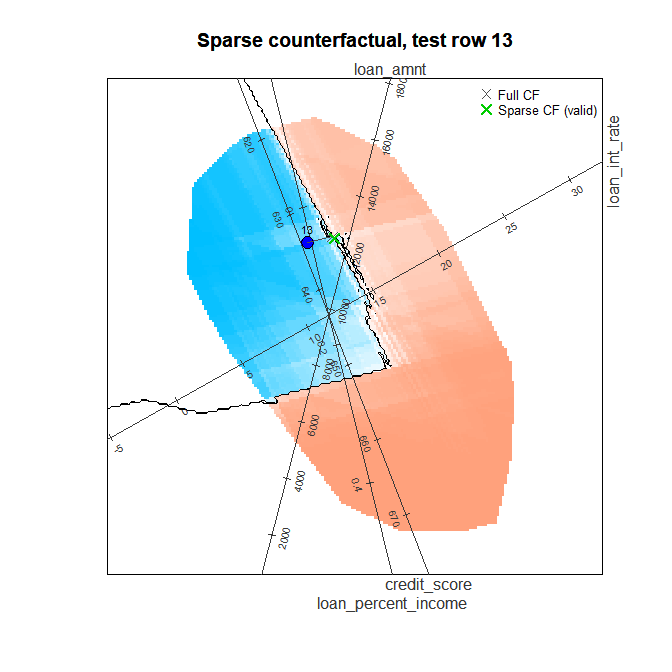
plot of chunk step14-sparse
#>
#> --- Sparse CF summary ---
#> Target : 13
#> Observed pred : 0.1110 (class 0)
#> Full CF pred : 0.6930
#> Sparse CF pred : 0.5120
#> Solution valid : TRUE
#> -------------------------The path shows the steps: raising the interest rate alone gives 0.51,
already across the cutoff, so the search stops there. The loan-to-income
ratio stays at its observed value although it supports the move, and the
credit score, which had no effect, does too.
solution_valid = TRUE confirms that the sparse
counterfactual changes the prediction.
Step 15: without actionability constraints
Without a set_filters() object, the search applies no
actionability constraint but keeps the hull and the training ranges.
Comparing it with Step 11 shows what the constraints cost.
set_filters(tgt, hull = FALSE, train_ranges = FALSE) drops
those two rules as well and gives the unconstrained counterfactual.
bl_local_free <- bl_find_local_cf(bl_results_v2, tgt)
#> Pair 1/6: components (1, 2) ...
#> Distance: 0.0067 Z | 0.8467 Mahalanobis (sqrt)
#> Pair 2/6: components (1, 3) ...
#> Distance: 0.0062 Z | 0.7857 Mahalanobis (sqrt)
#> Pair 3/6: components (2, 3) ...
#> Distance: 0.0068 Z | 0.8587 Mahalanobis (sqrt)
#> Pair 4/6: components (1, 4) ...
#> Distance: 0.0048 Z | 0.6130 Mahalanobis (sqrt)
#> Pair 5/6: components (2, 4) ...
#> Distance: 0.0070 Z | 0.8797 Mahalanobis (sqrt)
#> Pair 6/6: components (3, 4) ...
#> Distance: 0.0044 Z | 0.5554 Mahalanobis (sqrt)
#> Best pair: (3, 4) | Selector: Mahalanobis (sqrt) = 0.5554 | Z = 0.0044
print(bl_local_free)
#> -- bl_local_result --
#> Solution found : TRUE
#> Best pair : (3, 4)
#> Selector : mahalanobis
#> Distance (Z) : 0.0044
#> Euclidean (X) : 0.4902 (total-SD scale)
#> Mahalanobis : 0.5554 (sqrt of squared d_M^2 = 0.3084)
#> Boundary pred : 0.5420
#>
#> Target:
#> -- bl_target --
#> Row ID : 13
#> Predicted prob : 0.1110
#> Predicted class: 0
#> Feature values (raw units) :
#> loan_amnt loan_int_rate loan_percent_income credit_score
#> 12000.00 12.69 0.05 634.00
#>
#> Counterfactual:
#> -- bl_counterfactual --
#> Boundary prob : 0.5420
#> Predicted class: 1
#> Feature values (raw units) :
#> loan_amnt loan_int_rate loan_percent_income credit_score
#> 12544.23 14.11 0.04 633.43
#>
#> Per-pair distances:
#> pair dist_z dist_x dist_mahalanobis
#> (1,2) 0.006695411 0.7296956 0.7168979
#> (1,3) 0.006213215 0.6707546 0.6173557
#> (2,3) 0.006790123 0.7404645 0.7373236
#> (1,4) 0.004847747 0.5297130 0.3758224
#> (2,4) 0.006956424 0.7706287 0.7738822
#> (3,4) 0.004391655 0.4902350 0.3084318
#>
#> Observed vs counterfactual (raw units):
#> observed counterfactual change constraint
#> loan_amnt 12000.00 12544.23 544.23 none
#> loan_int_rate 12.69 14.11 1.42 none
#> loan_percent_income 0.05 0.04 -0.01 none
#> credit_score 634.00 633.43 -0.57 none
plot(bl_local_free,
label_dir = "Paral",
label_offset_var = c("loan_amnt", "loan_int_rate",
"loan_percent_income", "credit_score"),
label_offset_dist = c(0, 0, 0, 1),
ticks_var = c("loan_amnt", "loan_int_rate",
"loan_percent_income", "credit_score"),
ticks_n = c(4, 10, 10, 10))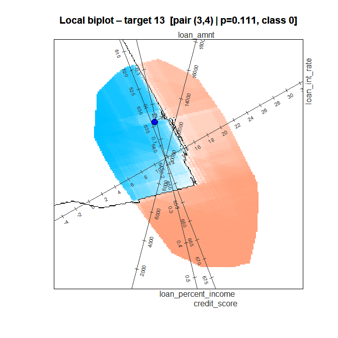
plot of chunk step15-local
#>
#> --- Local CF summary ---
#> Target : 13
#> Pred prob : 0.1110 (class 0)
#> Best pair : (3, 4)
#> Selector : mahalanobis
#> Distance (Z) : 0.0044
#> Euclidean (X) : 0.4902
#> Mahalanobis : 0.5554 (sqrt)
#> Boundary pred : 0.5420
#> ------------------------
bl_shap_free <- bl_shapley(bl_local_free)
bl_sparse_free <- bl_find_sparse_cf(bl_shap_free)
print(bl_sparse_free)
#> -- bl_sparse_result --
#> Solution valid : TRUE
#> Observed pred : 0.1110 (class 0)
#> Full CF pred : 0.5420
#> Sparse CF pred : 0.5420
#>
#> Observed vs sparse counterfactual (raw units):
#> observed counterfactual sparse change constraint used
#> loan_amnt 12000.00 12544.23 12000.00 0.00 none FALSE
#> loan_int_rate 12.69 14.11 14.11 1.42 none TRUE
#> loan_percent_income 0.05 0.04 0.04 -0.01 none TRUE
#> credit_score 634.00 633.43 634.00 0.00 none FALSE
#> (change = sparse - observed)
#>
#> Path (Supports features, largest Shapley value first):
#> step variable shapley pred crosses
#> 1 loan_int_rate 0.29 0.36 FALSE
#> 2 loan_percent_income 0.14 0.54 TRUE
plot(bl_shap_free)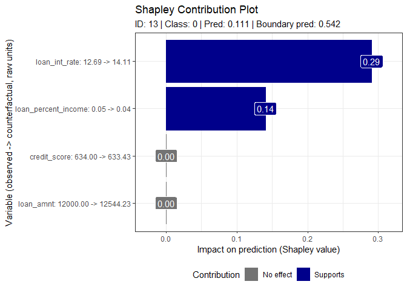
plot of chunk step15-shapley
plot(bl_sparse_free,
label_dir = "Paral",
label_offset_var = c("loan_amnt", "loan_int_rate",
"loan_percent_income", "credit_score"),
label_offset_dist = c(0, 0, 0, 1),
ticks_var = c("loan_amnt", "loan_int_rate",
"loan_percent_income", "credit_score"),
ticks_n = c(4, 10, 10, 10))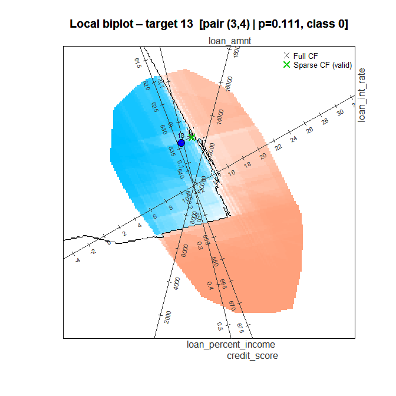
plot of chunk step15-sparse
#>
#> --- Sparse CF summary ---
#> Target : 13
#> Observed pred : 0.1110 (class 0)
#> Full CF pred : 0.5420
#> Sparse CF pred : 0.5420
#> Solution valid : TRUE
#> -------------------------Without constraints the counterfactual also raises the loan amount and lowers the credit score, changes the constraints rule out, and it lies nearer the target (0.56 against 0.69). Its sparse counterfactual changes the interest rate and the loan-to-income ratio.
Step 16: a new applicant
Phase 3 also explains applicants outside the data. Pass a one-row
data frame as the target, with the model’s features (other columns are
dropped here). The values are in the original units, and the model works
in z-scores, so bl_apply_scaling() converts them first;
every function that takes new data expects model units. No class column
is needed.
new_applicant <- data.frame(
person_age = 32,
person_gender = 1, # male
person_income = 248000,
person_emp_exp = 5,
person_home_ownership = 3, # RENT
loan_amnt = 12000,
loan_int_rate = 13.5,
loan_percent_income = 12000 / 248000,
cb_person_cred_hist_length = 4,
credit_score = 420
)
# Keep only the reduced model's features
new_applicant <- new_applicant[, intersect(names(new_applicant), feature_cols_v2),
drop = FALSE]
# Raw units to the model's z-scores
new_applicant <- bl_apply_scaling(new_applicant, bl_results_v2)
tgt_ext <- bl_select_target(bl_results_v2, target = new_applicant)
#> Warning: The target lies outside the training range for: credit_score. By
#> default the local search looks for counterfactuals within that range
#> (set_filters(..., train_ranges = FALSE) drops this rule).
bl_local_ext <- bl_find_local_cf(bl_results_v2, tgt_ext)
#> Pair 1/6: components (1, 2) ...
#> Distance: 0.0223 Z | 2.8241 Mahalanobis (sqrt)
#> Pair 2/6: components (1, 3) ...
#> Distance: 0.0227 Z | 2.8668 Mahalanobis (sqrt)
#> Pair 3/6: components (2, 3) ...
#> Distance: 0.0238 Z | 3.0131 Mahalanobis (sqrt)
#> Pair 4/6: components (1, 4) ...
#> Distance: 0.0232 Z | 2.9337 Mahalanobis (sqrt)
#> Pair 5/6: components (2, 4) ...
#> Distance: 0.0242 Z | 3.0555 Mahalanobis (sqrt)
#> Pair 6/6: components (3, 4) ...
#> Distance: 0.0250 Z | 3.1597 Mahalanobis (sqrt)
#> Best pair: (1, 2) | Selector: Mahalanobis (sqrt) = 2.8241 | Z = 0.0223
print(bl_local_ext)
#> -- bl_local_result --
#> Solution found : TRUE
#> Best pair : (1, 2)
#> Selector : mahalanobis
#> Distance (Z) : 0.0223
#> Euclidean (X) : 2.7859 (total-SD scale)
#> Mahalanobis : 2.8241 (sqrt of squared d_M^2 = 7.9757)
#> Boundary pred : 0.5410
#>
#> Target:
#> -- bl_target --
#> Row ID : external
#> Predicted prob : 0.2960
#> Predicted class: 0
#> Feature values (raw units) :
#> loan_amnt loan_int_rate loan_percent_income credit_score
#> 12000.00 13.50 0.0484 420.00
#>
#> Counterfactual:
#> -- bl_counterfactual --
#> Boundary prob : 0.5410
#> Predicted class: 1
#> Feature values (raw units) :
#> loan_amnt loan_int_rate loan_percent_income credit_score
#> 11331.04 14.06 0.0496 534.92
#>
#> Per-pair distances:
#> pair dist_z dist_x dist_mahalanobis
#> (1,2) 0.02233223 2.785911 7.975668
#> (1,3) 0.02266993 2.701006 8.218704
#> (2,3) 0.02382669 2.760514 9.078834
#> (1,4) 0.02319870 2.765563 8.606571
#> (2,4) 0.02416199 2.799483 9.336159
#> (3,4) 0.02498600 2.865789 9.983808
#>
#> Observed vs counterfactual (raw units):
#> observed counterfactual change constraint
#> loan_amnt 12000.00 11331.04 -668.96 none
#> loan_int_rate 13.50 14.06 0.56 none
#> loan_percent_income 0.0484 0.0496 0.0012 none
#> credit_score 420.00 534.92 114.92 nonebl_select_target() warns that the applicant’s credit
score of 420 lies below the training range, which starts at 489: the
model has not seen such scores, so treat its explanation with care. The
counterfactual lies inside the training data: inside its convex hull on
the plane and within its ranges, so its credit score is 534.92.
plot(bl_local_ext)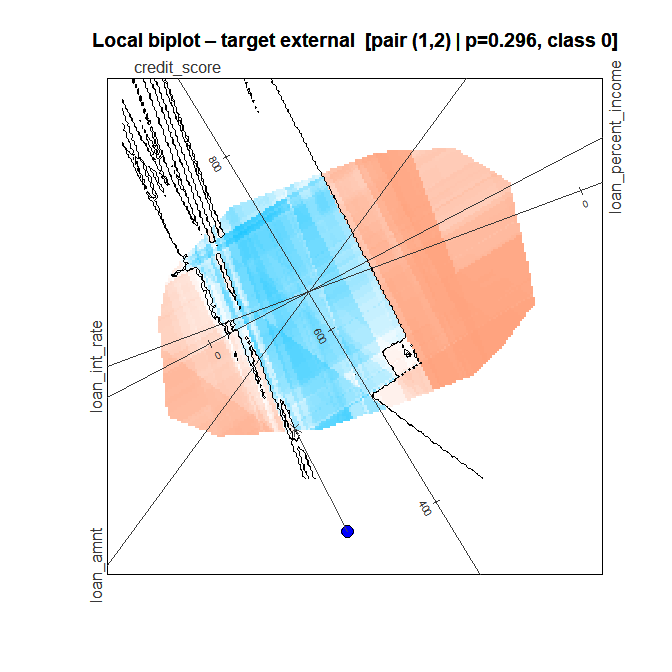
plot of chunk step16-local
#>
#> --- Local CF summary ---
#> Target : external
#> Pred prob : 0.2960 (class 0)
#> Best pair : (1, 2)
#> Selector : mahalanobis
#> Distance (Z) : 0.0223
#> Euclidean (X) : 2.7859
#> Mahalanobis : 2.8241 (sqrt)
#> Boundary pred : 0.5410
#> ------------------------The applicant lies outside the training data on the chosen plane, so the plot widens its window to show it. The prediction colour covers only the training data’s hull, and the arrow runs from the applicant into it. (Without a class column, the target is coloured by its predicted class only.)
bl_shap_ext <- bl_shapley(bl_local_ext)
bl_sparse_ext <- bl_find_sparse_cf(bl_shap_ext)
print(bl_sparse_ext)
#> -- bl_sparse_result --
#> Solution valid : TRUE
#> Observed pred : 0.2960 (class 0)
#> Full CF pred : 0.5410
#> Sparse CF pred : 0.5190
#>
#> Observed vs sparse counterfactual (raw units):
#> observed counterfactual sparse change constraint used
#> loan_amnt 12000.00 11331.04 12000.00 0.00 none FALSE
#> loan_int_rate 13.50 14.06 14.06 0.56 none TRUE
#> loan_percent_income 0.0484 0.0496 0.0484 0.0000 none FALSE
#> credit_score 420.00 534.92 420.00 0.00 none FALSE
#> (change = sparse - observed)
#>
#> Path (Supports features, largest Shapley value first):
#> step variable shapley pred crosses
#> 1 loan_int_rate 0.22 0.52 TRUE
plot(bl_shap_ext)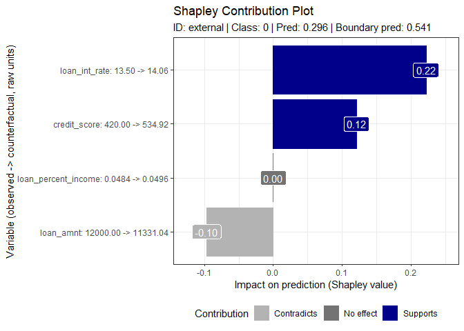
plot of chunk step16-shapley
plot(bl_sparse_ext)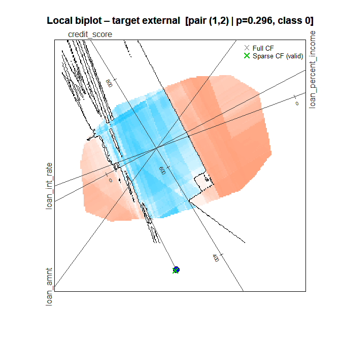
plot of chunk step16-sparse
#>
#> --- Sparse CF summary ---
#> Target : external
#> Observed pred : 0.2960 (class 0)
#> Full CF pred : 0.5410
#> Sparse CF pred : 0.5190
#> Solution valid : TRUE
#> -------------------------The sparse counterfactual changes only the interest rate. It keeps
the other features at their observed values, so its credit score is the
applicant’s 420, outside the training range:
bl_find_sparse_cf() checks only that the prediction crosses
the boundary.
Parameters: bl_apply_scaling()
| Parameter | Default | This call | Effect |
|---|---|---|---|
data |
(required) | the new applicant | Raw-unit values; other columns are returned unchanged |
bl_result |
(required) | bl_results_v2 |
Supplies the scaling recorded by bl_set_scaling()
|
Comparison with SHAP
SHAP (SHapley Additive exPlanations) is the most widely used post-hoc attribution method. Both SHAP and boundarylogic use Shapley values, but they answer different questions:
- SHAP splits the model’s predicted probability for an observation, relative to the average prediction over the training data. It says why the score is what it is.
- boundarylogic measures the distance to the decision boundary (globally) and the change that alters the decision (locally). It says what would have to change for the decision to change.
The chunks below compute SHAP for the same XGBoost
models with fastshap and shapviz.
They run only when both packages are installed.
if (has_shap) {
# fastshap needs a prediction wrapper f(object, newdata) -> numeric vector;
# XGBoost needs the new data as an xgb.DMatrix.
pred_fn <- function(object, newdata) {
as.numeric(predict(object, xgboost::xgb.DMatrix(as.matrix(newdata))))
}
# Background and explanation data for each model
X_train_full <- bl_dat$train_data[, bl_dat$var_names, drop = FALSE]
X_train_v2 <- bl_dat_v2$train_data[, bl_dat_v2$var_names, drop = FALSE]
X_test_v2 <- bl_dat_v2$test_data[, bl_dat_v2$var_names, drop = FALSE]
# The reduced model works in z-scores. SHAP is computed on those, but the
# plots show the feature values in raw units, as boundarylogic does.
to_raw <- function(X, scaling) {
X[] <- Map(function(x, v) x * scaling$scale[[v]] + scaling$center[[v]],
X, names(X))
X
}
X_train_v2_raw <- to_raw(X_train_v2, bl_results_v2$scaling)
X_test_v2_raw <- to_raw(X_test_v2, bl_results_v2$scaling)
# SHAP baseline: the mean predicted probability over the reduced model's
# training rows (fastshap does not attach one; shapviz needs it).
shap_baseline <- mean(pred_fn(xgb_fit_v2, X_train_v2))
}Global: SHAP against the distance to the boundary
In Phase 2 the distance to the boundary chose the variables to keep. Here SHAP answers the same question on the full nine-feature model: the variables ranked by their mean absolute SHAP value, beside the distance ranking.
if (has_shap) {
set.seed(42L)
shap_full <- fastshap::explain(
object = xgb_fit, # full nine-feature model
X = X_train_full,
pred_wrapper = pred_fn,
nsim = 50L
)
shap_imp <- names(sort(colMeans(abs(as.matrix(shap_full))), decreasing = TRUE))
dist_imp <- names(sort(bnd_imp$sum_of_distance, decreasing = TRUE))
print(data.frame(
rank = seq_along(shap_imp),
SHAP = shap_imp,
dist_to_bound = dist_imp
))
}
#> rank SHAP dist_to_bound
#> 1 1 loan_int_rate loan_int_rate
#> 2 2 loan_percent_income loan_percent_income
#> 3 3 person_income loan_amnt
#> 4 4 credit_score person_income
#> 5 5 loan_amnt credit_score
#> 6 6 person_emp_exp person_age
#> 7 7 person_age person_emp_exp
#> 8 8 cb_person_cred_hist_length cb_person_cred_hist_length
#> 9 9 person_gender person_genderBoth rankings put loan_int_rate and loan_percent_income first and the same two variables last, and they differ in the middle. SHAP ranks a variable by how far it moves the predicted probability away from the average; the distance ranks it by how much of the distance to the decision boundary it carries. A variable can move many scores a little (high SHAP) yet rarely be what carries an applicant across the boundary, and the reverse.
Global SHAP for the four kept variables
SHAP on the reduced model, the four variables the workflow kept:
if (has_shap) {
set.seed(42L)
shap_v2 <- fastshap::explain(
object = xgb_fit_v2, # reduced model
X = X_train_v2,
pred_wrapper = pred_fn,
nsim = 50L
)
sv_v2 <- shapviz::shapviz(as.matrix(shap_v2), X = X_train_v2_raw,
baseline = shap_baseline)
print(shapviz::sv_importance(sv_v2, kind = "bar") +
ggplot2::labs(title = "Global SHAP importance - reduced XGB model"))
}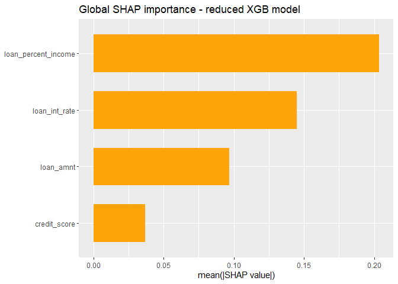
plot of chunk shap-global-bar
if (has_shap) {
print(shapviz::sv_importance(sv_v2, kind = "beeswarm") +
ggplot2::labs(title = "Global SHAP beeswarm - reduced XGB model"))
}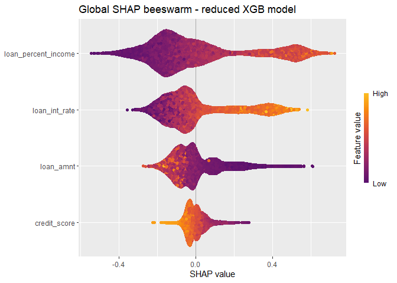
plot of chunk shap-global-beeswarm
Compare these with plot(bl_bnd_v2) in Step 7b. The bar
chart and the distance totals are both global importance measures. The
beeswarm adds the direction in which high and low values push
the predicted probability; the distance plot shows the signed
distance from each applicant to the boundary along each
variable.
Local: SHAP against bl_shapley()
Local SHAP for the applicant of Phase 3, test row 13:
if (has_shap) {
set.seed(42L)
shap_local <- fastshap::explain(
object = xgb_fit_v2,
X = X_train_v2,
pred_wrapper = pred_fn,
nsim = 200L,
newdata = X_test_v2[tdp, , drop = FALSE],
adjust = TRUE # force additivity: sum(shap) = f(x) - baseline
)
sv_local <- shapviz::shapviz(as.matrix(shap_local),
X = X_test_v2_raw[tdp, , drop = FALSE],
baseline = shap_baseline)
print(shapviz::sv_waterfall(sv_local) +
ggplot2::labs(title = sprintf("Local SHAP waterfall - applicant %d", tdp)))
}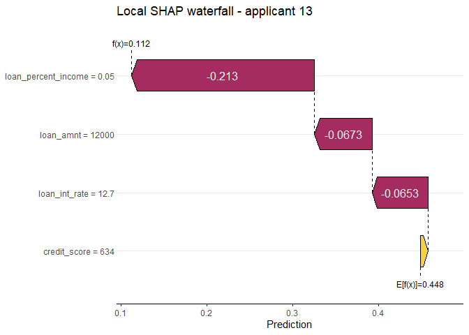
plot of chunk shap-local
if (has_shap) {
print(shapviz::sv_force(sv_local) +
ggplot2::labs(title = sprintf("Local SHAP force plot - applicant %d", tdp)))
}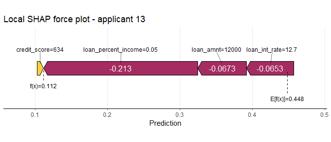
plot of chunk shap-local-force
Set beside plot(bl_shapley_values) (Step 13):
| Aspect | Local SHAP (waterfall, force) | bl_shapley() |
|---|---|---|
| What it explains | The predicted probability for this applicant | The move from this applicant to its counterfactual |
| Reference point | The mean training prediction | The applicant’s observed values |
| Reading | Each bar pushes the score up or down | Each bar Supports or Contradicts crossing the boundary, or has No effect |
| Output | A decomposition of the score | A change to act on (observed -> counterfactual) |
| Constraints | None | The set_filters() rules |
SHAP explains why the model scored this applicant as it
did; bl_shapley() and the sparse counterfactual
say which feasible change would alter the decision. The
two complement each other: SHAP to understand the score, boundarylogic
to act on it.
Summary
| Phase | Step | Function | Purpose |
|---|---|---|---|
| 1 | 1, 3 | (base R) | Load and encode; domain filter |
| 1 | 2 |
bl_prepare_data(),
bl_build_result(method = "PCA")
|
Exploratory biplot without a model |
| 1 | 4 | bl_prepare_data() |
Train/test split and hull filter |
| 1 | 5 | bl_wrap_model() |
Wrap a fitted model ("custom" with
predict_fn) |
| 1 | 6 |
bl_build_result(method = "CVA"),
bl_project_points()
|
Model biplot, decision boundary, test rows |
| 2 | 7 |
bl_find_boundary(), plot()
|
Global counterfactuals, distance to the boundary per variable |
| 2 | prune |
plot()’s sum_of_distance
|
Rank the variables, drop the weakest |
| 1 | 4b-6b |
bl_set_scaling(),
bl_wrap_model(model_type = "XGB")
|
Refit on standardised features with raw-unit display |
| 2 | 7b | bl_find_boundary() |
Distance to the boundary, reduced model |
| 2 | 8, 8b | bl_surrogate() |
How faithfully the biplot represents the model |
| 3 | 9 | bl_predict() |
Score the test rows, choose the applicant |
| 3 | 10 |
bl_select_target(), set_filters()
|
Target, actionability, plausibility and feasibility |
| 3 | 11-12 |
bl_find_local_cf(), plot()
|
Local counterfactual and its biplot |
| 3 | 13 | bl_shapley() |
Which changes matter |
| 3 | 14 | bl_find_sparse_cf() |
Change as few features as needed |
| 3 | 15 |
bl_find_local_cf() without
set_filters
|
The counterfactual without actionability constraints |
| 3 | 16 |
bl_apply_scaling(),
bl_select_target()
|
Explain a new applicant |
| - | - |
fastshap, shapviz
|
SHAP for the same models, global and local |
boundarylogic and SHAP work best together. SHAP explains the model’s score against an average applicant; boundarylogic places each applicant relative to the decision boundary and finds the smallest feasible change that would alter the decision.